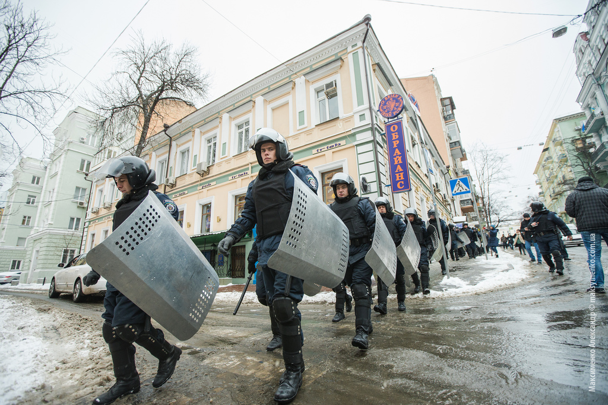

Ukraine orders Crimea troop withdrawal as Russia seizes naval base
By Marie-Louise Gumuchian and Victoria Butenko, CNN

Kiev, Ukraine (CNN) -- Interim Ukrainian President Oleksandr Turchynov ordered the withdrawal of armed forces from Crimea Monday, citing Russian threats to the lives of military staff and their families.
Russian troops have seized most of Ukraine's bases in the peninsula, including a naval base at Feodosia on Monday. Russia annexed Crimea last week after a controversial referendum that Ukraine and the West say was illegal.
"The acting President of Ukraine has given an order to the Ukraine Defense Ministry for the withdrawal of all Ukrainian forces from Crimea," a spokeswoman for Turchynov told CNN. The soldiers' families will be evacuated as well.
Earlier, Russian troops stormed and seized the Ukrainian naval base in Feodosia, a port in Crimea, a Ukrainian Defense Ministry spokesman said. Witnesses said several Mi-24 and Mi-8 helicopters were involved in the raid. Between 60 and 80 Ukrainian troops were captured and taken from the base, said Vladislav Seleznev, a Ukrainian Defense Ministry spokesman in Crimea.
Ukrainians had said they would leave the base if they were allowed to take their weapons with them.
Russian forces consolidated their control of the Black Sea peninsula over the weekend.
On Saturday, six Russian special forces armored personnel carriers broke through the gates of Belbek air base, firing warning shots into the air. In separate incidents, pro-Russian self-defense forces stormed the Novofederoskoe military base as well as a Ukrainian ship, the Slavutych.
On a trip to Crimea Monday, Russian Defense Minister Sergey Shoigu appointed Rear Adm. Denis Berezovsky deputy commander of the Russian Black Sea Fleet, Russia's ITAR-Tass reported. That fleet is based in the Crimean city of Sevastopol, making it strategically important to Moscow.
Shoigu also met with former Ukrainian military personnel, who are now willing to serve in the Russian army, state news agency RIA-Novosti reported.
NATO concerns
NATO's top military commander expressed concern Sunday about the buildup of Russian forces on Ukraine's border.
Supreme Allied Commander Europe Gen. Philip Breedlove said that Russia had a large force on Ukraine's eastern border and that he was worried it could threaten Moldova's separatist Transnistria region.
The Russian force "at the Ukrainian border now to the east is very, very sizable and very, very ready," said Breedlove, a U.S. Air Force general.
Russia said the presence of its forces complied with international agreements. Moscow annexed Crimea after a snap referendum in the autonomous region last week that appeared to produce an overwhelming majority of votes in favor of leaving Ukraine to join Russia.
"Russia is acting much more like an adversary than a partner," Breedlove said, speaking at an event held in Brussels, Belgium, by the German Marshall Fund think tank.
A senior U.S. defense official told CNN Russia "has enough troops that we believe they could move against Ukraine at any time now."
The official emphasized that Washington still does not know Russia's intentions on the border, despite statements by Moscow that the troops are there for exercises. U.S. intelligence also indicates that the Russian forces are positioned to possibly go after three Ukrainian cities: Kharkiv, Luhansk and Donetsk. Russian forces have moved so close to the border, there would be no warning time, and the U.S. would likely only see an incursion as it was happening, the official said.
Claims on Crimea
Ukraine's new leaders -- who took office after months of protests forced President Viktor Yanukovych, a Russian ally, from office -- as well as the United States and other Western powers say Crimea is still a part of Ukraine.
Russia insists its actions are legitimate. Crimea had belonged to Russia until 1954, when it was given to Ukraine. The region also has a majority ethnic Russian population and other long historic ties to Russia.
Moscow has doggedly pursued its own course, even as Western leaders have denounced its actions as violations of Ukraine's sovereignty and a breach of international law.
Diplomacy at The Hague
U.S. President Barack Obama arrived at The Hague on Monday for a G7 summit on threats to nuclear security. The G7 is a group of the world's seven wealthiest industrialized nations.
Diplomats at the G7 were talking about Ukraine on the sidelines of the long-planned summit.
"Europe and America are united in our support of the Ukrainian government and the Ukrainian people," Obama said. "We're united in imposing a cost on Russia for its actions so far."
Obama and other world leaders decided to end Russia's role in G8, the group of leading industrialized nations plus Russia, the White House said Monday.
"International law prohibits the acquisition of part or all of another state's territory through coercion or force," the White House statement said. "To do so violates the principles upon which the international system is built. We condemn the illegal referendum held in Crimea in violation of Ukraine's constitution."
Earlier in the day, Russia's Foreign Minister Sergey Lavrov said being kicked out of G8 would be no big deal.
"G8 is an informal organization that does not give out any membership cards and, by its definition, cannot remove anyone," he said during a news conference. "All the economic and financial questions are decided in G20, and G8 has the purpose of existence as the forum of dialogue between the leading Western countries and Russia.
"If our Western partners believe that this organizational format has outlived (its usefulness), so be it."
Ahead of Monday's G7 meeting, a representative for British Prime Minister David Cameron said Monday that no G8 meeting -- a group of the world's seven top industrial powers plus Russia -- would take place in Russia this year as previously planned.
The G7 had already suspended preparations for a planned G8 summit in the Russian city of Sochi. Monday's comment by Cameron's representative ruling the meeting out altogether comes as the West tries to increase Moscow's isolation over its actions in Ukraine.
A planned EU-Russia summit also has been canceled.
Also at the nuclear summit Monday, Russian Foreign Minister Sergey Lavrov met with Ukrainian Interim Foreign Minister Andrii Deshchytsia and, separately, with U.S. Secretary of State John Kerry.
During his meeting with Lavrov, Kerry expressed concern about Russian troops amassed on the Ukrainian border, U.S.State Department spokeswoman Marie Harf said.
Also Monday, Russia's Foreign Ministry announced it was issuing retaliatory sanctions against 13 Canadian public figures, in response to a similar move by Canada last week against Russian officials over the Crimean situation, RIA-Novosti reported.
Russia is banning the Canadian officials -- including several aides to Canadian Prime Minister Stephen Harper -- from entering the country, according to RIA-Novosti.
EU leaders imposed a new round of sanctions against 12 people last week, bringing the total number of people facing EU asset freezes and travel bans to 33. Canada also announced its own sanctions against Russian officials last week.
The United States announced its own new round of sanctions against 20 people and a bank that U.S. officials say is linked to Putin and senior Russian officials. Washington had already announced sanctions on 11 people.
Russia responded with its own list of sanctions against a number of U.S. lawmakers and officials.